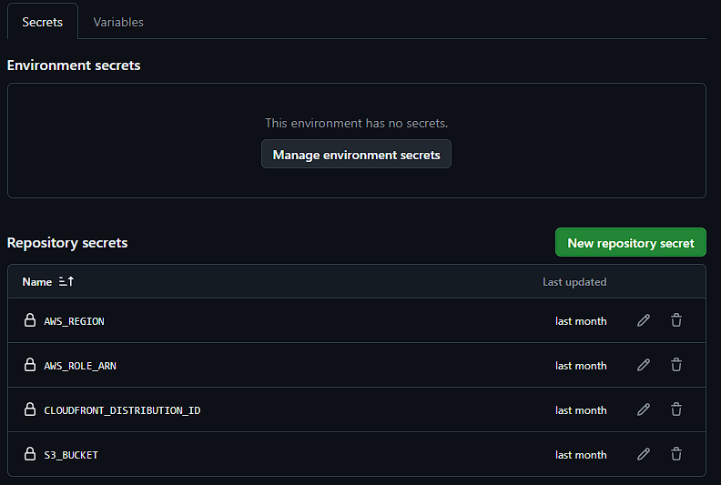

Automating Deployments with GitHub CI/CD
Part 5 of the AWS Cloud Resume Challenge
After deploying my website to AWS and securing it with CloudFront and HTTPS, the next improvement was the deployment process itself.
At this point in the project, every update required manually uploading files to the S3 bucket through the AWS console. Even small changes, such as adjusting CSS or updating resume text, meant repeating the same manual steps. While this works for experimentation, it quickly becomes inefficient and increases the risk of mistakes.
To solve this, I implemented an automated deployment pipeline using GitHub Actions. Now, whenever I push changes to the repository, GitHub automatically deploys the updated website to AWS.
This approach mirrors how modern development teams deploy applications. Instead of manually updating infrastructure, changes are committed to version control and deployed automatically through a CI/CD pipeline.
Step 1 - Creating the GitHub Repository
The first step was placing the website into version control. I created a GitHub repository and uploaded the full website project, including:
- HTML files
- CSS stylesheets
- JavaScript files
- Images and static assets
- Every change is tracked through commits
- Previous versions of the site can be restored if needed
- Development history is preserved
- The project can easily support collaboration in the future
 GitHub repository showing the website file structure.
GitHub repository showing the website file structure.
Step 2 - Granting GitHub Permission to Deploy
For GitHub to deploy files to AWS, it must be able to authenticate with AWS services.
To accomplish this, I created a dedicated IAM user with programmatic access. The user was assigned a policy granting only the permissions required for the deployment workflow. The CI/CD pipeline requires access to:s3:PutObjects3:DeleteObjectcloudfront:CreateInvalidation
- Upload updated files to the S3 bucket
- Remove outdated files from the bucket
- Invalidate the CloudFront cache so visitors receive the latest version of the website
AWS_ACCESS_KEY_IDAWS_SECRET_ACCESS_KEY

GitHub repository secrets showing AWS credentials stored securely.Security Note
Using long-lived access keys works for small projects, but modern CI/CD pipelines typically use OpenID Connect (OIDC) instead.
OIDC allows GitHub to assume an AWS role and receive temporary credentials without storing permanent access keys. While access keys were sufficient for this stage of the project, OIDC is the recommended approach for production environments.
Step 3 - Creating the Deployment Workflow
GitHub Actions workflows are defined using YAML configuration files.
Inside the repository, I created the following directory:.github/workflows/Within that folder, I created a workflow file named:
deploy.ymlThis file defines the steps GitHub should run whenever code is pushed to the repository. The workflow is triggered automatically when updates are pushed to the main branch.
The pipeline performs the following steps:
1. Checkout the Repository Code
GitHub pulls the latest version of the repository so the workflow can access the website files.2. Configure AWS Credentials
The workflow authenticates with AWS using the credentials stored in GitHub Secrets.3. Deploy the Website Files to S3
The deployment step uses the AWS CLI command:aws s3 sync . s3://jonathanlayman.com --delete--delete flag ensures that files removed from the repository are also removed from the S3 bucket so the bucket stays synchronized with the codebase.
4. Invalidate the CloudFront Cache
CloudFront caches website files to improve performance. Because of this, the pipeline also performs a cache invalidation using:aws cloudfront create-invalidation --distribution-id YOUR_DISTRIBUTION_ID --paths "/*" deploy.yml workflow file open in VS Code.
deploy.yml workflow file open in VS Code.
Step 4 - Testing the Pipeline
After committing the workflow file to the repository, the CI/CD pipeline activated automatically.
To test the pipeline, I made a small change to the website and pushed the update to GitHub. Inside the Actions tab of the repository, I could watch the workflow execute in real time.Once the pipeline completed successfully, a green checkmark confirmed that the deployment had finished.
After refreshing the website, the changes were immediately visible. This confirmed that the pipeline successfully synchronized the repository with the S3 bucket and invalidated the CloudFront cache.
 GitHub Actions workflow run with a green checkmark.
GitHub Actions workflow run with a green checkmark.
Lessons Learned
Building this CI/CD pipeline reinforced several important DevOps concepts.- Automation reduces operational overhead - Manual deployments are slow and error-prone. Automating deployments ensures that updates are consistent and repeatable.
- Version control improves reliability - Using GitHub as the source of truth ensures every change is tracked and recoverable.
- Cache invalidation is essential - CloudFront aggressively caches files to improve performance. Without invalidating the cache, users may continue seeing outdated content.
- CI/CD is the foundation of modern DevOps - Automated pipelines allow developers to move faster while maintaining reliability and consistency across deployments.
The Result
With the CI/CD pipeline in place, the deployment process is now fully automated.
Whenever I push changes to GitHub:- GitHub Actions runs the deployment workflow
- Updated files are synchronized to the S3 bucket
- CloudFront invalidates the cache
- The updated site becomes available globally within seconds
What's Next?
With the deployment process automated, the next step was improving cost visibility.
Even though most of the infrastructure used in this project falls within the AWS Free Tier, it is still important to monitor spending and set alerts early.In the next post, I configure AWS Budgets and cost monitoring to ensure the infrastructure remains within safe spending limits as the project grows. Next Up: Cost Optimization - Setting Up My AWS Safety Net